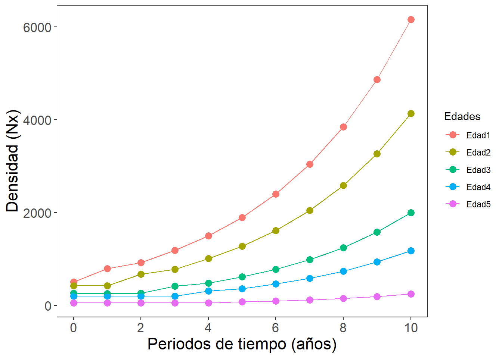
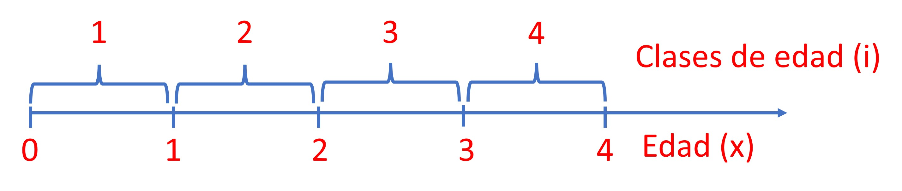

Taller6. Mod.Matricial
Introducción

Para algunos estudiantes o investigadores, el trabajo con tablas de vida puede ser demandante de tiempo, algo confuso y tedioso, en cuanto a estimaciones de parámetros de supervivencia, reproducción y otros como la esperanza de vida (ex), la distribución estable de edades (cx) o el valor reproductivo (vx), por lo que los sistemas matriciales, con la ayuda de programas computacionales como Excel o R, pueden generar una ayuda al ser funciones más prácticas, a la hora de conocer cómo se obtienen esos estimadores junto a las densidades de la población en sus clases de edad o de estado, mediante simulaciones de la densidad poblacional por edades o estados (Nt) en el tiempo. En este sentido, el presente taller se orienta a la proyección mediante simulaciones, de la densidad poblacional, haciendo uso de matrices de Leslie (L) y de vectores que representan a la densidad de la población por edades (x) o clases de edades o estados (i).
Notación de variables y constantes del sistema. Se debe diferenciar entre edades (x) y clases de edades (i) de la población con la siguiente figura.

Se puede utilizar a las edades (x) si el censo se ha realizado con esa escala de años, como se realizó en el ejercicio anterior de tablas de vida por edades (x) del taller anterior. En la figura anterior se presenta una alternativa de designar a la edad de los individuos por clases de edad (i). Esta figura muestra que un individuo de la clase de edad i se encuentra entre la edad i-1 e i. Ej. un individuo de la clase de edad 1 está entre la edad 0 y 1. De acuerdo a Bonilla (2004) y a Gotelli (2008), para propósitos de mdelación matricial, la supervivencia vista en las tablas de vida como Sx, denotan como Pi, y el coeficiente de fecundidad Fx, lo asocian a Fi, correspondiente a los individuos de una misma clase de edad. Para la proyección matricial, se puede usar la notación de edades (x) y de clases de edad (i). Iniciaremos con (1) las edades y posteriormente se describen (2) las clases de edad (i).
1. Estimadores de supervivencia y de fecundidad por edades (x)
Horario de maternidad por edades (mx o bx). Es el número de crías o recien nacidas hembras que nacen por unidad de tiempo, por una madre de una edad particular. Ej, si m3 = 3, indica que las madres de 3 años de edad, en promedio producen 3 crías o recien nacidos que aportan a la pobación. Normalmente los modelos de poblaciones se hacen solo con las hembras o individuos capaces de producir descendientes. Para la modelación se debe tener en cuenta si la población presenta uno de estos dos patrónes reproductivos:
- Semelpara (en fauna) o monocarpica (en vegetación). Porque habrá un solo evento reproductivo en una edad o clase de edad específica. Esta población tendrá ceros en todos los estados o edades, excepto en uno. Ej. Salmones o algunas especies vegetales.
- Iteropara (en fauna) o policarpica (en vegetación). La reproducción se da en repetidas ocasiones a lo largo del ciclo de vida. Ej. en mamiferos o en algunos árboles.
- Poblaciones anuales o perennes. Las poblaciones que vivien durante un año y las que se mantienen durante varios años.
Supervivencia por clases de edad (Sx). Corresponde a la probabilidad de que un individuo sobreviva a la clase de edad siguiente:
S_{(x)}=\frac{N_{(x+1)}}{N_{(x)}}.
Cálculo de la fecundidad o fertilidad por clases de edad (Fx). La fecundidad es definida de la siguiente forma:
F_{(x)}=m_{(x)}.S_{(0)} En caso de que el censo sea pre-reproductivo.
F_{(x)}=m_{(x+1)}.S_{(x)} En caso de que el censo sea post-reproductivo.
*Estos tipos de censos serán descritos más adelante.
2. Estimadores de supervivencia y de fecundidad por clases de edad (i)
Supervivencia por clases de edad (Pi). Corresponde a la probabilidad de que un individuo sobreviva a la clase de edad siguiente, similar a lo realizado con edades para Sx:
p_{(i)}=\frac{l_{(i)}}{l_{(i-1)}}.
Cálculo de la fecundidad o fertilidad por clases de edad (Fi). La fecundidad es definida de la siguiente forma:
F_{(i)}=m_{(i)}.P_{(i)}
Matriz de Leslie por clases de edad (i).
Una manera de representar la dinámica poblacional en cuanto a la fecundidad (Fx) y la supervivencia por cada clase de edad (Sx), consiste en organizar los datos de la tabla de vida, en una matriz, teniendo en cuenta a la estructura de edades en columnas (tiempo t) y filas de contribuciones o de supervivencia (en tiempo t+1). Las matrices se pueden construir a partir de las tablas de vida o a partir de gráficos del ciclo de vida de las poblaciones.
Si la información está organizada a partir de clases de edades, la matriz utilizada es la de Leslie (L). Lo modelos matriciales de estructuras de estado como las edades (x), son desarrollados a partir de matrices de Leslie (Leslie, 1954, 1958), consisten la organización parámetros demográficos obtenidos de tablas de vida por edades (tx0), en tiempos futuros (tx+1, tx+2,…, tx+n) o de los ciclos de vida.
Las matrices de Leslie, son cuadradas (igual número de filas y de columnas) y se pueden representar por k clases de edad (i), entonces la matriz será de k x k, de la siguiente forma:
L=\left[\begin{array}{ccc} F_{1} & F_{2} & F_{3} & F_{4}\\ P_{1} & 0 & 0 & 0 \\ 0 & P_{2} & 0 & 0 \\ 0 & 0 & P_{3} & 0 \\ \end{array}\right]
Cada columna de la matriz es la clase de edad al tiempo (t) y cada fila es la clase de edad siguiente (t+1). En esta matriz las fecundidades (Fi) se ubican en la primera fila, representando las contribuciones a recien nacidos por cada clase de edad. Las supervivencias (Pi) se ubican en la subdiagonal y el resto de elementos son ceros. N_{(t+1)}=L.N_{(t)}
Esta ecuación indica que el vector de la población en el tiempo siguiente (t+1) es igual a la matriz de Leslie (L es constante) por el vector de la población en el tiempo actual.
| x | Nx | lx | mx | Sx | i | Ni | Pi | Fi |
|---|---|---|---|---|---|---|---|---|
| 0 | 500 | 1.000 | 0.0 | 0.85 | - | - | - | - |
| 1 | 423 | 0.846 | 0.5 | 0.61 | 1 | 923 | 0,85 | 1,35 |
| 2 | 260 | 0.520 | 1.4 | 0.75 | 2 | 260 | 0,61 | 2,01 |
| 3 | 195 | 0.390 | 1.0 | 0.26 | 3 | 195 | 0,75 | 1,75 |
| 4 | 50 | 0.100 | 0.5 | 0.00 | 4 | 50 | 0,26 | 0,76 |
Es así como la matriz de Leslie, para las clases de edad se organizan así:
L=\left[\begin{array}{ccc} 1,35 & 2,01 & 1,75 & 0,76\\ 0,85 & 0 & 0 & 0 \\ 0 & 0,61 & 0 & 0 \\ 0 & 0 & 0,75 & 0 \\ \end{array}\right]
Matriz de Leslie por edades (x).
Estas matrices pueden ser construidas a partir de censos previos a la etapa reproductiva (post-reproductivo o post-breeding) o pre-reproductivo (pre-breeding). Para el primer caso post-reproductivo) la fecundidad (Fx) = Sx * mx+1, para el segundo caso (pre-breeding) La fecundidad Fx= S0 * mx.
Matriz post-reproductiva (Fpost).
La organización de la matriz de Leslie (L) para este tipo de censo post-reproductivo es la siguiente:
L=\left[\begin{array}{ccc} F_{0} & F_{1} & F_{2} & F_{3} & F_{4}\\ S_{0} & 0 & 0 & 0 & 0\\ 0 & S_{1} & 0 & 0 & 0\\ 0 & 0 & S_{2} & 0 & 0\\ 0 & 0 & 0 & S_{3} & 0\\ \end{array}\right]
De esta manera, la tabla de vida por edades queda de la siguiente forma:
| x | Nx | lx | mx | Sx | F.post. | F.pre. |
|---|---|---|---|---|---|---|
| 0 | 500 | 1.000 | 0.0 | 0.85 | 0.42 | 0.00 |
| 1 | 423 | 0.846 | 0.5 | 0.61 | 0.86 | 0.42 |
| 2 | 260 | 0.520 | 1.4 | 0.75 | 0.75 | 1.18 |
| 3 | 195 | 0.390 | 1.0 | 0.26 | 0.13 | 0.85 |
| 4 | 50 | 0.100 | 0.5 | 0.00 | 0.00 | 0.42 |
Es así como la matriz de Leslie, para las clases de edad se organizan así:
L=\left[\begin{array}{ccc} 0,42 & 2,86 & 0,75 & 0,13 & 0\\ 0,85 & 0 & 0 & 0 & 0 \\ 0 & 0,61 & 0 & 0 & 0 \\ 0 & 0 & 0,75 & 0 & 0 \\ 0 & 0 & 0 & 0,26 & 0 \\ \end{array}\right]
#
Una vez que los datos son organizados en matrices de Leslie, se puede realizar una proyección multi-estado (multi-edad) del crecimiento poblacional, multiplicando la matriz L por la densidad poblacional de la tabla de vida (Nt) que corresponde a un vector columna, con lo cual podremos calcular la densidad poblacional en un siguiente tiempo (Nt+1).
L * N{t} = N{t+1}=\left[\begin{array}{ccc} F_{0} & F_{1} & F_{2} & ... & F_{n}\\ S_{0} & 0 & 0 & 0 & 0\\ 0 & S_{1} & 0 & 0 & 0\\ 0 & 0 & ... & 0 & 0\\ 0 & 0 & 0 & S_{q} & 0\\ \end{array}\right] * \left[\begin{array}{ccc} n_{0}\\ n_{1}\\ n_{2}\\ ...\\ n_{n}\\ \end{array}\right] = \left[\begin{array}{ccc} n_{0+1}\\ n_{1+1}\\ n_{2+1}\\ ...\\ n_{n+1}\\ \end{array}\right]
Para proyectar la población en tiempos siguientes, la matriz L permanece constante, por lo que se asume que las tasas de fecundidad (Fx) y supervivencia (Sx) no cambian, la densidad en los siguientes periodos de tiempo, puede calcularse multiplicando a L por N t+n, donde n corresponde al tiempo más reciente de la proyección.
Matriz pre-reproductiva (Fpre).
La organización de la matriz de Leslie (L) para este tipo de censo es la siguiente:
L=\left[\begin{array}{ccc} F_{0} & F_{1} & F_{2} & F_{3} & F_{4}\\ S_{1} & 0 & 0 & 0 & 0\\ 0 & S_{2} & 0 & 0 & 0\\ 0 & 0 & S_{3} & 0 & 0\\ 0 & 0 & 0 & S_{4} & 0\\ \end{array}\right]
Revisando los datos de fecundidad pre-reproductiva de la Tabla 1, se obtiene la siguiente matriz pre-breeding (Fpre).
L=\left[\begin{array}{ccc} 0 & 0,42 & 1,18 & 0,85 & 0,42\\ 0,61 & 0 & 0 & 0 & 0\\ 0 & 0,75 & 0 & 0 & 0\\ 0 & 0 & 0,26 & 0 & 0\\ 0 & 0 & 0 & 0,0 & 0\\ \end{array}\right]
Una vez que los datos son organizados en la matriz de Leslie pre-reproductiva, se puede realizar una proyección o simulación multi-edad del crecimiento poblacional, similar a lo descrito en la anterior proyección post-reproductiva, multiplicando la matriz L por la densidad poblacional de la tabla de vida (Nt) que corresponde a un vector columna, con lo cual podremos calcular la densidad poblacional en un siguiente tiempo (Nt+1).
L * N{t} = N{t+1}=\left[\begin{array}{ccc} F_{0} & F_{1} & F_{2} & ... & F_{n}\\ S_{1} & 0 & 0 & 0 & 0\\ 0 & S_{2} & 0 & 0 & 0\\ 0 & 0 & ... & 0 & 0\\ 0 & 0 & 0 & S_{q} & 0\\ \end{array}\right] * \left[\begin{array}{ccc} n_{0}\\ n_{1}\\ n_{2}\\ ...\\ n_{n}\\ \end{array}\right] = \left[\begin{array}{ccc} n_{0+1}\\ n_{1+1}\\ n_{2+1}\\ ...\\ n_{n+1}\\ \end{array}\right]
Ejemplo1. Proyección de la población de la tabla de vida (tabla 2) para un censo post-reproductivo.
Cargar librerías requeridas
library(ggplot2)
library(tidyverse)
library(tidyr)Paso 1. Cargar la matriz de Leslie (matriz1.csv)
# Cargar la base de datos "matriz1.csv"
matriz1 = read.csv2("matriz1.csv",row.names=1)
matriz1 Edad_0 Edad_1 Edad_2 Edad_3 Edad_4
Edad_0 0.42 0.86 0.75 0.13 0
Edad_1 0.85 0.00 0.00 0.00 0
Edad_2 0.00 0.61 0.00 0.00 0
Edad_3 0.00 0.00 0.75 0.00 0
Edad_4 0.00 0.00 0.00 0.26 0Nota: En caso de que se requiera construir la matriz sin cargarla desde una base de datos, se puede editar así (cambié matriz1 por matriz):
matriz = matrix(c(0.42,0.86,0.75,0.13,0,
0.85,0,0,0,0,
0,0.61,0,0,0,
0,0,0.75,0,0,
0,0,0,0.26,0),5,5,byrow = T)
Edades <- c("Edad_0","Edad_1","Edad_2","Edad_3","Edad_4")
rownames(matriz) <- Edades
colnames(matriz) <- Edades
matriz = data.frame(matriz)
matriz Edad_0 Edad_1 Edad_2 Edad_3 Edad_4
Edad_0 0.42 0.86 0.75 0.13 0
Edad_1 0.85 0.00 0.00 0.00 0
Edad_2 0.00 0.61 0.00 0.00 0
Edad_3 0.00 0.00 0.75 0.00 0
Edad_4 0.00 0.00 0.00 0.26 0Paso 2. Cargar el vector de edades (Nt)
# población inicial
Nt <- c(500,423,260,195,50)
Nt[1] 500 423 260 195 50# número de períodos a proyectar en el modelo
t <- 10
t[1] 10 Paso 3. Crear una función llamada modelo_pob, para automatizar el producto de la matriz de Leslie (L) por los vectores de edades (N), siguiendo la ecuación N_{(t+1)}=L.N_{(t)}, en donde N_{(t+1)} es la simulación del modelo de la población (modelo_pob) a realizar.
# Funcion (modelo_pob) para modelar la población por las diferentes edades en el tiempo.
# 1) Elementos de la modelación (Matriz de Leslie - L, Vector de Abundancias - Nt y Periodos a modelar - t)
modelo_pob <- function(L, Nt, t) {
# 2) Crear una matriz vacía para almacenar los datos
m.vacia <- matrix(nrow = t + 1, ncol = length(Nt))
# 3) Establecer la población inicial (Nt)
m.vacia[1,] <- Nt
# 4) Iterar sobre cada período y actualizar la población
for (i in 1:t) {
# 4) Producto de la matriz de transición (L) por la población actual (Nt)
N <- L %*% m.vacia[i,]
# 5) Almacenar los datos para este período
m.vacia[i + 1,] <- N
}
# 6) Convertir la matriz de datos en un data.frame y añadir nombres a las columnas
data.frame(m.vacia) %>%
set_names(paste0("Edad", 1:length(Nt)))
} Paso 4. Generar la simulación del producto de la matriz de Leslie (L) por las abundancias (Nt), en los intervalos de tiempo definidos (t), siguiendo la ecuación N_{(t+1)}=L.N_{(t)}, en donde N_{(t+1)} es la simulación del modelo de la población (modelo_pob) a realizar.
# Proyección de la población en 10 periodos de tiempo
# 1) Usar la función creada en el paso anterior (modelo_pob), para el producto de L x Nt
simulación <- modelo_pob(as.matrix(matriz1), Nt, t)
# 2) Crear una nueva columna (Tiempo) con el comando "mutate" de tidyverse.
simulación <- simulación %>%
mutate(Tiempo = 1:(nrow(simulación)) - 1)
# 2.1) Opcional: Visualizar la base de datos de la Simulación
colnames(simulación) <- c("Edad_0","Edad_1","Edad_2","Edad_3","Edad_4", "Tiempo")
head(round(simulación)) Edad_0 Edad_1 Edad_2 Edad_3 Edad_4 Tiempo
1 500 423 260 195 50 0
2 794 425 258 195 51 1
3 918 675 259 194 51 2
4 1186 780 412 194 50 3
5 1503 1008 476 309 51 4
6 1895 1278 615 357 80 5# 3) Convertir la base de datos a formato largo (simulación_l)
simulación_l <- simulación %>%
pivot_longer(cols = -Tiempo, names_to = "Edad", values_to = "Abundancia")
# 3.1) Redondear la columna "Abundancia" a cero decimales
simulación_l <- simulación_l %>%
mutate(Abundancia = round(Abundancia, 0))
# Visualizar la base en formato largo
head(simulación_l)# A tibble: 6 × 3
Tiempo Edad Abundancia
<dbl> <chr> <dbl>
1 0 Edad_0 500
2 0 Edad_1 423
3 0 Edad_2 260
4 0 Edad_3 195
5 0 Edad_4 50
6 1 Edad_0 794Paso 5. Figura de la proyección multi-edad de acuerdo a la simulación realizada.
# Crear el gráfico de la proyección multiedad de la base de datos (simulación_l)
library(ggplot2)
ggplot(simulación_l, aes(x = Tiempo, y = Abundancia, color = Edad)) + # Capa 1. ejes de la figura
geom_point(size=3) + # Capa 2. Puntos
geom_line() + # Capa 3. Líneas
labs(x = "Periodos de tiempo (años)",
y = "Densidad (Nx)", color = "Edades") + # Capa 4. Rótulos de los ejes
scale_x_continuous(breaks = seq(min(simulación_l$Tiempo), # Capa 5. Eje x, en escala de 2 en 2 años
max(simulación_l$Tiempo), by = 2)) +
theme_bw() + # Capa 6. Fondo de la figura
theme(axis.text = element_text(size = 13), # Capa 7. Varias operaciones
axis.title.x = element_text(size = 16), # Ajuste de tamaño de textos
axis.title.y = element_text(size = 16),
panel.grid.major = element_blank(), # Quitar la cuadrículas del fondo.
panel.grid.minor = element_blank()) 
Análisis de la matriz de transición
Este análisis es relevante, principalmente para conocer la proyección de la población en cuanto a su dinámica a corto plazo, asumiendo que varios parámetros no son afectados por el fluctuaciones del ambiente. A partir de esto, se puede calcular:
La tasa finita de aumento de la población (
λ)La estructura estable de edades (
cx).El valor reproductivo (
vx)Análisis de sensibilidad y de elasticidad (
Sijyeij).
La tasa finita de aumento de la población (λ)
Este análisis es conocido como el de autovalores o eigenvalues, de mucha aplicación en ecología, para estimaciones multivariadas (ej. en pca) o en estos análisis de transiciones poblacionales en el tiempo. el análisis de autovalores es el que permite calcular a lambda (λ) o tasa de aumento finito de la población.
Lw=λw
En donde w corresponde a los autovectores (vector columna) con el mismo número de filas de la matriz de Leslie (L). Si la matriz de Leslie es de 2 x 2, entonces:
\left[\begin{array}{ccc} l_{11} & l_{12} \\ l_{21} & l_{21} \\ \end{array}\right] * \left[\begin{array}{ccc} w_{11}\\ w_{21}\\ \end{array}\right] = λ \left[\begin{array}{ccc} w_{11}\\ w_{21}\\ \end{array}\right]
Para el ejemplo 1, el cálculo de lambda (λ) se realiza de la siguiente forma:
Paso 1. Cargar la matriz de transición de Leslie (L).
matriz1 = read.csv2("matriz1.csv",row.names=1)
matriz1 Edad_0 Edad_1 Edad_2 Edad_3 Edad_4
Edad_0 0.42 0.86 0.75 0.13 0
Edad_1 0.85 0.00 0.00 0.00 0
Edad_2 0.00 0.61 0.00 0.00 0
Edad_3 0.00 0.00 0.75 0.00 0
Edad_4 0.00 0.00 0.00 0.26 0Paso 2. Calcular los autovalores (eigen) y los autovectores (vectors)
autoval <- eigen(matriz1)Paso 3. Calcular el primer autovalor principal que corresponde a la tasa finita de crecimiento de la población.
round((lambda1 <- autoval$values[1]),3)[1] 1.265+0iEste valor de lamnda, indica que el crecimiento promedio anual de la población es de ((lamda-1)*100) del 26% para las diferentes edades evaluadas. Esto se produce una vez la población alcanza su distribución estable.
Otra forma es calcular el valor propio dominantes más grande, pidiendo a R que indique la posición del indice (i) con el valor absoluto más grande de los autovalores o lambdas.
( pos.dom <- which.max( Mod(autoval[["values"]]) ) )[1] 1Paso 4. Ahora se mantiene la parte real usando el comando Re() y descartando la parte imaginaria.
# Extracción del autovalor dominante
round(( Lambda1 <- Re(autoval[["values"]][pos.dom])),3)[1] 1.265
Distribución estable de edades (cx)
Corresponde a un vector el cual indica que cuando todas las tasas demográficas permanecen constantes, el aumento o disminución de la población (dependiendo de si lambda es mayor o menos a 1) alcanzará su distribución estable de edades.
Para el cálculo de cx, se requiere extraer el vector propio o autovector dominante (w1) y dividirlo por la sumatoria de sus elementos.
c_{x}=\frac{w_{1}}{\sum(w_{1})}. Para el ejemplo 1, el cálculo de cx se realiza de la siguiente forma:
Paso 1. Cargar la matriz de transición de Leslie (L).
matriz1 = read.csv2("matriz1.csv",row.names=1)
matriz1 Edad_0 Edad_1 Edad_2 Edad_3 Edad_4
Edad_0 0.42 0.86 0.75 0.13 0
Edad_1 0.85 0.00 0.00 0.00 0
Edad_2 0.00 0.61 0.00 0.00 0
Edad_3 0.00 0.00 0.75 0.00 0
Edad_4 0.00 0.00 0.00 0.26 0Paso 2. Cálculo de los valores y vectores própios (autoval) y del vector própio dominante (w1).
# Cálculo de autovalores y autovectores de la matriz L
autoval <- eigen(matriz1)
# Cálculo del vector propio dominante
w1 <- Re(autoval[["vectors"]][,pos.dom])
w1[1] -0.79195711 -0.53195652 -0.25642568 -0.15197716 -0.03122534Paso 3. Cálculo del vector de distribución estable en proporciones y porcentajes (cx).
# Calculo del vector de distribución estable
cx <- matrix(w1/sum(w1))
rownames(cx) <- c("edad_0","edad_1","edad_2","edad_3","edad_4")
cx <- data.frame(cx)
round(cx, 3) cx
edad_0 0.449
edad_1 0.302
edad_2 0.145
edad_3 0.086
edad_4 0.018# Cálculo de cx en términos porcentuales
cx <- matrix((w1/sum(w1))*100)
rownames(cx) <- c("edad_0","edad_1","edad_2","edad_3","edad_4")
cx <- data.frame(cx)
round(cx, 1) cx
edad_0 44.9
edad_1 30.2
edad_2 14.5
edad_3 8.6
edad_4 1.8Lo anterior indica el porcentaje de aumento que presentará la población en sus diferentes edades, una vez alcance su distribución estable, con una tasa finita de aumento o lambda de 1.265 (26.5% de aumento anual)
Valor reproductivo (vx)
Brinda información de la importancia reproductiva de los individuos en cada edad, por lo que corresponde a la contribución esperada de los individuos para el mantenimiento de la población, debido a sus reclutas o descendientes exitósos. Para su cálculo, se requiere obtener el vector propio o autovector izquierdo dominante v.
vL=λv Se requiere realizar un escalamiento, para que todos los valores resproductivos sean relativos a la primera etapa, que inicia en 1.
\frac{v_{1}}{v_{1[1]}}.
Para el ejemplo 1, el cálculo de vx se realiza de la siguiente forma:
Paso 1. Cargar la matriz de transición de Leslie (L).
matriz1 = read.csv2("matriz1.csv",row.names=1)
matriz1 Edad_0 Edad_1 Edad_2 Edad_3 Edad_4
Edad_0 0.42 0.86 0.75 0.13 0
Edad_1 0.85 0.00 0.00 0.00 0
Edad_2 0.00 0.61 0.00 0.00 0
Edad_3 0.00 0.00 0.75 0.00 0
Edad_4 0.00 0.00 0.00 0.26 0Paso 2. Cálculo del autovector dominante en valores reales v_{1}
tL <- t(matriz1) # Transpuesta de la matriz de Leslie (matriz1)
autoval <- eigen(tL) # Autovalores y autovectores de la matriz transpuesta
pos.dom <- which.max(Mod(autoval$values)) # Valor resproductivo más grande (1)
v1 <- Re(autoval$vectors[,pos.dom]) # Autovector dominante en valores realesPaso 3. Cálculo del vector del valor reproductivo v_{x}
# Vector de valores reproductivos por cada edad (x)
vx <- matrix(v1/v1[1])
rownames(vx) <- c("edad_0","edad_1","edad_2","edad_3","edad_4")
vx <- data.frame(vx)
round(vx, 2) vx
edad_0 1.00
edad_1 0.99
edad_2 0.65
edad_3 0.10
edad_4 0.00Para este caso se observa que el valor reproductivo disminuye con la edad, aunque por lo general, el valor reproductivo debe aumentar en edades con mayor potencial de fecundidad.
Sensibilidad y Elasticidad
Estos elementos hacen parte de los análisis de perturbaciones prospectivas (Lemos et al. 2005), que evalúan el efecto de pequeños cambios en atributos vitales en alguna etapa de la vida en una población de interés, como sus tasas de crecimiento (c_{x}), de reproducción (m_{x} o F_{x}) y de supervivencia (l_{x} o S_{x}) y su efecto en una variable respuesta que por lo general es la tasa de crecimiento finito (\lambda). Esto ayuda a tomar medidas de manejo, orientadas a la conservación o el control de poblaciones, dado que de esta manera es posible conocer la importancia de cada atributo vital mencionado. Estos análisis (Sensibilidad o Elasticidad), permiten simular o proyectar la respuesta de \lambda debido al cambio en algun atributo vital (c_{x}, l_{x} o S_{x}, m_{x} o F_{x}), para alguna edad o estado en particular. Ej. se puede saber la respuesta de \lambda si aumenta S_{x} en alguna proporción específica.
1. Análisis de Sensibilidad
La sensibilidad S_{ij} mide el impacto absoluto (\delta) en la tasa finita de crecimiento poblabional \lambda, sobre el cambio absoluto en uno de los elementos de la matriz de transición de Leslie L. De esta forma, las sensibilidades son consideradas contribuciones directas de cada transición en la matriz L, sobre el valor de \lambda_{1}.
S_{ij}=\frac{\delta\lambda}{\delta l_{ij}}=\frac{v_{1[i]} .\omega_{1[j]}}{v_{1} .\omega_{1}}
En donde l_{ij} corresponde al elemento de la matriz de Leslie L que ha sido alterado de forma absoluta (\delta). v_{1} .\omega_{1} es el producto de cada combinación de pares de elementos de los vectores própios dominantes izquierdo y derecho - v y \omega, respectivamente. El numerador se genera por el valor reproductivo (v_{x}) del periodo objetivo y la distribución estable del periodo actual (\omega_{1}).
\left[\begin{array}{ccc} v_{1}\\ v_{2}\\ \end{array}\right] * \left[\begin{array}{ccc} \omega_{1} & \omega_{2} \\ \end{array}\right] = \left[\begin{array}{ccc} v_{1}\omega_{1} & v_{1}\omega_{2}\\ v_{2}\omega_{1} & v_{2}\omega_{2}\\ \end{array}\right]
Para el cálculo de la Sensibilidad, se realiza un producto entre el vector del valor reproductivo (v_{x}) y la transpuesta del vector de distribución estable (\omega). En el denominador de la ecuación de la sensibilidad S , se realiza la suma de los productos por pares de cada elemento del vector.
v_{11}\omega_{11} + v_{12}\omega_{12} + ... + v_{1n}\omega_{1n} Para el ejemplo 1, el cálculo de la Sensibilidad (S_{ij}) se realiza de la siguiente forma:
Paso 1. Cargar la matriz de transición de Leslie (L).
matriz1 = read.csv2("matriz1.csv",row.names=1)
matriz1 Edad_0 Edad_1 Edad_2 Edad_3 Edad_4
Edad_0 0.42 0.86 0.75 0.13 0
Edad_1 0.85 0.00 0.00 0.00 0
Edad_2 0.00 0.61 0.00 0.00 0
Edad_3 0.00 0.00 0.75 0.00 0
Edad_4 0.00 0.00 0.00 0.26 0vx1 y cx1son el valor reproductivo (vx) y la distribución estable de edades (cx) en formato matricial. vw es el producto de los valores alterados (v_{1} .\omega_{1}) en el numerador de la ecuación y prod es la suma de los productos por pares.
Paso 2. Cálculo del estimador de sensibilidad de la matriz
# Valor reproductivo y distribución estable en formato matricial
vx1 = as.matrix(vx)
cx1 = as.matrix(cx)
# Numerador y denominador de la ecuación de sensibilidad
vw = vx1 %*% t(cx1)
prod <- sum(vx1*cx1)
# Cálculo de la sensibilidad (S)
round((s <- vw/prod),2) edad_0 edad_1 edad_2 edad_3 edad_4
edad_0 0.53 0.35 0.17 0.10 0.02
edad_1 0.52 0.35 0.17 0.10 0.02
edad_2 0.34 0.23 0.11 0.07 0.01
edad_3 0.05 0.04 0.02 0.01 0.00
edad_4 0.00 0.00 0.00 0.00 0.00La anterior en la matriz de sensibilidad S_{ij}, resultante de \delta\lambda/\delta l_{ij} correspondiente a los cambios absolutos de las tasas vitales (cx y vx) sobre la respuesta relativa de \lambda. Para el ejemplo realizado, la mayor sensibilidad es de 0,053, la cual se presenta en el elemento l_{11} que corresponde a la fecundidad o aporte de individuos recien nacidos (F_{0}). La segunda mayor sensibilidad es de 0,52, que correrponde al elemento l_{21} que corresponde a los individuos de edad 0, que sobreviven a la edad 1. Lo anterior implica que cambios absolutos pequeños sobre esos individuos, pueden generar los mayores efectos sobre el incremento finito de la población (\lambda).
2. Análisis de Elasticidad
En las matrices de transición de Leslie (L), como las escalas de supervivencia no pueden ser mayores a uno, pero las de fecundidad pueden superar esos valores, los análisis de Sensibilidad al ponderar cambios absolutos en los estimadores vitales, pierden relevancia a la hora de hacer comparaciones entre poblaciones de diferentes especies.
En este sentido La elasticidad e_{ij} mide el impacto proporcional (\delta) en la tasa finita de crecimiento poblabional \lambda, resultante del cambio proporcional en cada elemento de la matriz de transición de Leslie (L). de esta manera, las elasticidades son estandarizaciones de las matrices de sensibilidad. e_{ij} está determinada por la siguiente ecuación:
e_{ij}=\left(\frac{l_{ij}}{\lambda}\right)\left(S_{ij}\right)
En donde l_{ij} corresponde al elemento de la matriz de Leslie L que ha sido alterado de forma proporcional (\lambda) es la tasa finita de crecimiento de la población y S_{ij} es la sensibilidad estimada anteriormente. Todos los elementos de la matriz e_{ij} suman uno, haciendo que sus resultados sean más comparables con los de otras poblaciones.
\sum{e_{ij}}=1
Para el ejemplo 1, el cálculo de la Eslasticidad (e_{ij}) es muy sencillo y se realiza de la siguiente forma:
Paso 1. Cargar la matriz de transición de Leslie (L).
matriz1 = read.csv2("matriz1.csv",row.names=1)
matriz1 Edad_0 Edad_1 Edad_2 Edad_3 Edad_4
Edad_0 0.42 0.86 0.75 0.13 0
Edad_1 0.85 0.00 0.00 0.00 0
Edad_2 0.00 0.61 0.00 0.00 0
Edad_3 0.00 0.00 0.75 0.00 0
Edad_4 0.00 0.00 0.00 0.26 0Paso 2. Cálculo de la matriz de elasticidad e_{ij}.
e = Es la matriz de elasticidad a calcular
s = Es la matriz de sensibilidad calculada en el paso anterior.
Lambda1 = Es el autovalor o tasa finita de crecimiento, calculada anteriormente.
e <- (matriz1/Lambda1) * s
(round(e, 3)) Edad_0 Edad_1 Edad_2 Edad_3 Edad_4
Edad_0 0.175 0.240 0.101 0.01 0
Edad_1 0.352 0.000 0.000 0.00 0
Edad_2 0.000 0.111 0.000 0.00 0
Edad_3 0.000 0.000 0.010 0.00 0
Edad_4 0.000 0.000 0.000 0.00 0Para este caso se observa que la supervivencia en la edad 0 (elemento l21 = 0.35) y la fecundidad de la edad 1 (elemento l12 = 0.24) son las que tienen mayor efecto sobre \lambda. En este sentido, un cambio en la supervivencia de los recien nacidos (edad 0) o en la fecundidad de los de edad 1, tendra un impacto mayor en el aumento de la población (\lambda), comparado al resto de tasas vitales, dado a que son las tasas con mayor elasticidad.
La diferencia de este patrón con el generado en la matriz de sensibilidad se presenta porque la matriz de sensibilidad refleja un cambio proporcional de los elementos de la matriz y entre todas suman uno, mientras que las sensibilidades generan un efecto absoluto o de cantidades constantes sobre dichos eleentos.
De las matrices de sensibilidad y de elasticidad se puede concluir, que los elementos que controlan la tasa de crecimiento finito \lambda en esta población estructurada por edades (x), son la fecundidad y la supervivencia de las edades 0 y 1. Esto es de mucha importancia para proyectos orientados al control de poblaciones invasoras o aquellas que por el contrario, se encuentren amenazadas por extinción.
Cuestionario

Realizar la proyección de la población de la tabla de vida (tabla 2) para un censo pre-reproductivo, siguiendo los pasos del ejemplo 1.
Realizar una revisión del libro “Applied Population Ecology” de Akcakaya et al. (1999) (p. 133 – 141)
- Estudiar la temática de tópicos especiales.
- Estudiar y analizar la figura 4.7, enfatizando en las diferencias en censos pre y post reproductivos.
- Realizar el ejercicio para la construcción de matrices pre y post reproductivas y la relación de estas con la figura 4.7.
Realizar una revisión del libro “Técnicas para el estudio de poblaciones de Fauna Silvestre” de Lemos et al. (2005) (p. 116 – 126).
- ¿Cuál es la diferencia entre matrices de Leslie y de Lefkovitch?
- ¿Analizar la figura 12, correspondiente al ciclo de vida de una tortuga?
- ¿Qué una estructura estable de edades (cx)?
- Cálculo de la distribución estable de edades (cx) y su relación con lambda (λ) (tasa finita de crecimiento)
Cálculo del valor reproductivo.
Realizar una revisión del libro “Primer of Ecology” de Gotelli (2008) (Capitulo 3)
Analizar cómo se construye una tabla de vida, incluido sus estimadores generales (Ro, T, r, λ) (tabla 3.1)
Descripción de estructuras de edad (p. 59)
Cálculo de la matriz de Leslie (L) (p. 61)
Cálculo de la distribución estable de edades (cx) y su relación con lambda (tasa finita de crecimiento) (p. 63)
Cálculo del valor reproductivo (vx) (p. 67).
Calcular los siguientes estimadores: λ, la estructura estable - cx y el valor reproductivo - vx, para la siguiente matriz propuesta por Doak et al. (1994), realizada para una población de tortugas del desierto Gopherus agasizzi, adicionalmente realizar una figura de su ciclo de vida (tomado del libro de Lemos et al. (2005)).
Lk = \left[\begin{array}{ccc} 0 & 0 & 0 & 0 & 0 & 2,22 & 3,38 & 4,38\\ 0,716 & 0,567 & 0 & 0 & 0 & 0 & 0 & 0\\ 0 & 0,149 & 0,576 & 0 & 0 & 0 & 0 & 0\\ 0 & 0 & 0,149 & 0,604 & 0 & 0 & 0 & 0\\ 0 & 0 & 0 & 0,235 & 0,56 & 0 & 0 & 0\\ 0 & 0 & 0 & 0 & 0,225 & 0,678 & 0 & 0\\ 0 & 0 & 0 & 0 & 0 & 0,249 & 0,851 & 0\\ 0 & 0 & 0 & 05 & 0 & 0 & 0,016 & 0,86\\ \end{array}\right]
N_{t} = \left[\begin{array}{ccc} 2722 \\ 4656 \\ 1692 \\ 664 \\ 372 \\ 28 \\ 523 \\ 66 \\ \end{array}\right]
Referentes Bibliográficos
Formulas
- Ecuaciones para tablas de vida y matrices - ENLACE (Se requiere inprimirlas y llevarlas a las sesiones de clase).

Libros Guía
- Libro - Técnicas para el estudio de poblaciones de fauna silvestre (Lemos et al. 2005) - ENLACE_PDF (Revisar desde la página 105).
Citar como: Lemos-Espinal, J. A., Rojas González, R. I., & Zúñiga Vega, J. J. (2005). Técnicas para el estudio de poblaciones de fauna silvestre (No. 04; QL83. 17, L4.).

- Libro: Applied Population Ecology: Principles and Computer Exercises Using RAMAS EcoLab 2.0. (Akçakaya et al. 1999). - ENLACE
Citar como: Akçakaya, H. R., Burgman, M. A., & Ginzburg, L. R. (1999). Applied population ecology: principles and computer exercises using RAMAS EcoLab 2.0.

- Libro: A Primer of Ecology. (Gotelli, Nicholas J. 2008). - ENLACE.
Citar como: Gotelli, N. J. (2008). A Primer of Ecology (Sinauer, Sunderland, MA).

Artículos sobre tablas de vida
- Chilito y Ospina. 2019. Tabla de vida Erycina pusilla (Orchidaceae) en la finca El Limonar, vereda Clarete, Popayán, Cauca.
- Quispe et al. 2015. Ciclo biológico y Tabla de Vida de Aedes aegypti, en laboratorio: Trujillo (Perú), 2014
- Gamboa y camacho. 2001. Tabla de vida del lobo marino de California Zalophus californianus californianus en la lobera Los Islotes, B.C.S., México.
- Orozco et al. 1990. Efecto de la temperatura sobre la tabla de vida de Oligonychus yothersi en Coffea arabica
- González. 1987. Tabla de vida para Phoracantha semipunctata Fab. (Col. Cerambycidae). Perforador de los eucaliptos, en el Sudoeste español
Artículos sobre modelación matricial de poblaciones
- Castillo. 2012. Dinámica poblacional del murciélago vampiro Desmodus rotundus (Chiroptera: Phyllostomidae) en la Reserva de la Biosfera Barranca de Metztitlán, Hidalgo, México. Tesis de Maestría.
- Villavicencio et al. 2017. Dos Modelos para el Estudio de la Dinámica Poblacional de Peces Tilapia en Condiciones de Cultivo